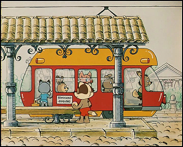
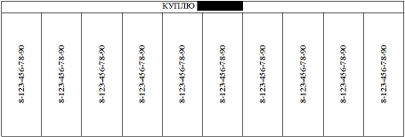
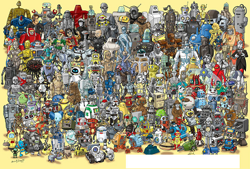
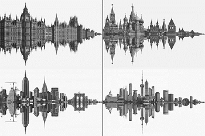

1. Говорят, что перед неблизким путешествием с некой компанией Эзоп взял на себя самую большую корзину. И не прогадал. Что в ней было?
Ответ: Еда на дорогу.
2. В "Энциклопедии суеверий" описана легенда, объясняющая болтливость женщин. Бог создал Еву без языка, но Адам сунул ей в рот лист некоего растения, который и превратился в женский язык. Однако если верить другой, более известной, легенде, эта история лишена логики. Назовите упомянутое в вопросе растение.
Ответ: Осина.
Комментарий: Адам явно сглупил, выбрав материалом для языка Евы осиновый лист, который постоянно находится в движении. Однако по другой легенде осина трепещет с тех пор, как из нее был сделан крест, на котором распяли Иисуса Христа, что было значительно позже истории про Адама и Еву.
3. Сравнение переменчивой фортуны и меняющейся луны не встречается в античных текстах, но появляется в средневековой поэзии. Михаил Гаспаров предполагает, что это связано с появлением ЕЕ. Назовите ЕЕ.
Ответ: Рифма.
Комментарий: В античности рифмы не было. В средневековье стало можно рифмовать fortuna — luna.
4. В рассказе-притче Паустовского мальчик бессердечно бросает лошади кусок хлеба в снег со словами: "Вот твой хлеб! Иди копай его мордой из-под снега". Вскоре ударяет сильный мороз, и мальчику с друзьями приходится топорами и ломами разбивать лед, чтобы возобновить... Что именно?
Ответ: Работу мельницы.
Комментарий: Мальчику тоже в какой-то мере пришлось добывать хлеб, освобождая мельничные лопасти от снега и льда.
5. К сожалению, раздатка не передает все перипетии сюжета и нюансы музыки, но все-таки мы просим вас назвать и сценариста, и композитора мультфильма "Пятачок".

Ответ: Петр Фролов, Евгений Птичкин.
{kind=link}
6. [НИ В КОЕМ СЛУЧАЕ не разрезать полосочки на раздаточном материале! На каждую команду раздается ОДИН экземпляр!]
Какое слово закрыли?

Ответ: Ножницы.
Комментарий: Неразрезанный раздаточный материал должен помочь выйти на правильный ответ.
{kind=link}
7. На этой картинке закрыли вопросительную фразу, в которой упоминается имя собственное. Назовите это имя, содержащее не только буквы.

Ответ: ВАЛЛ-И. (WALL-E, УОЛЛ-И и т.д.)
Комментарий: Надпись — "Where's WALL-E?", по аналогии с "Where's Wally?". Он тут в третьем ряду по центру, за роботом-яйцом.
{kind=link}
8. В феврале 1933 года Максим Горький отмечал в письме земляку, что очень неловко и неприятно писать [ПРОПУСК 1] вместо [ПРОПУСК 2]. Воспроизведите оба пропуска в правильном порядке.
Ответ: Горький, Нижний Новгород.
Комментарий: Максим Горький был недоволен переименованием города в его честь.
9. Цитата из шуточной энциклопедии: "Взрослый — тот, который перестал расти [два слова пропущены] и теперь растет [еще два слова пропущены]". Пропущенные слова вы можете встретить, предаваясь одну популярному развлечению. Назовите это развлечение.
Ответ: Кроссворд.
Комментарий: Пропуски — "по вертикали" и "по горизонтали".
10. Вы видите несколько рекламных плакатов. От чего защищает людей рекламируемый товар?

Ответ: Шум (Городской шум, шум мегаполиса, громкие звуки и т.п.)
Комментарий: Рекламируются шумоизолирующие наушники. Изображение каждого мегаполиса (Лондон, Москва, Шанхай, Нью-Йорк) напоминает затухающую осциллограмму звукового сигнала. Создатели рекламы намекают, что шум мегаполиса наушники не пропускают.
{kind=link}